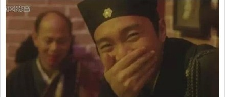
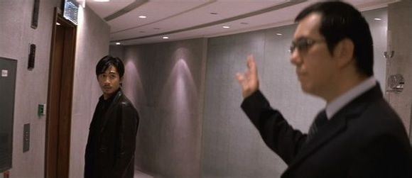
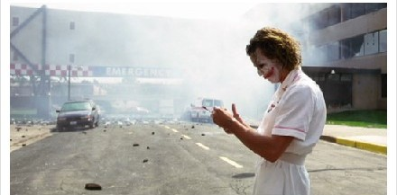
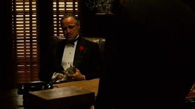
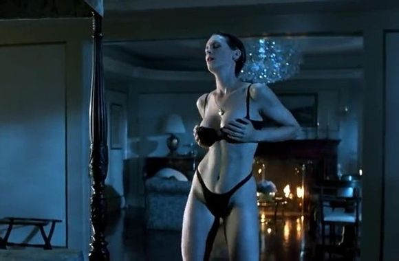
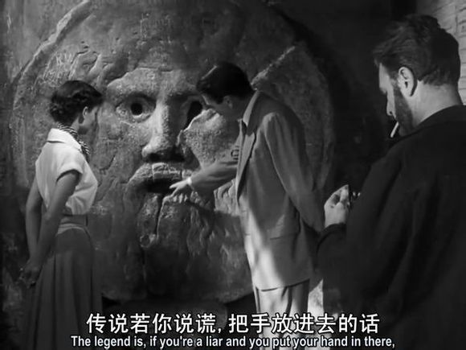
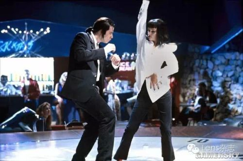
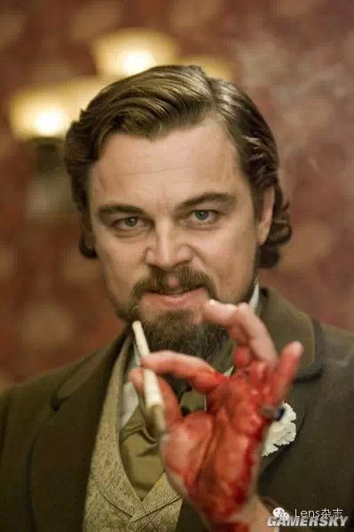
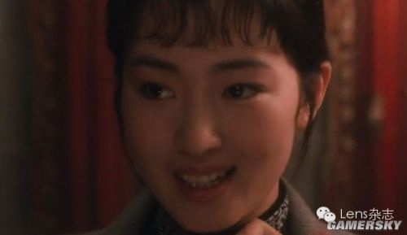

1. 《大内密探零零发》
罗家英被大BOSS给轰到墙上吐血，假发掉下来时，周星驰蹲在前面转身看到捂嘴偷笑的镜头，是当时的一个NG镜头，但放到电影中喜剧效果十足。
2. 《泰坦尼克号》杰克给肉丝画像时让她躺在床上，后又说让她躺在沙发上。而剧本上原文是躺在沙发上，是莱昂纳多说错了。但是导演卡梅隆非常喜欢这个错误，并把它保留了下来了，恰到好处地体现了杰克当时紧张局促的心理。

3. 《无间道》这一句“喂”是黄秋生莫名其妙脱口而出，并非剧本所有。梁朝伟的茫然回头是真实反应。当你看完影片回想的时候，会发现这一段仿佛讲禅的对话，是两人之间最后的对白。如果是王家卫电影，这里应该响起梁朝伟的画外音：“我当时并不明白他的意思。我不知道他为什么要叫住我，却又什么也没说。他是一个很奇怪的人，我一直都知道。但十二分零七秒之后，他落在我身后那辆出租车的车顶上。我好像突然明白了他的意思。”

4. 《蝙蝠侠：黑暗骑士》希斯-莱杰小丑 小丑炸医院那场戏不是特技，是真正的现场爆炸，希斯莱杰手里拿的是真的起爆器，他穿着护士服蹦蹦跳跳的从医院里出来，按下起爆器，医院炸了几响又停了，小丑很疑惑，很不甘心的用手掌敲了敲，然后医院又继续炸了，直至整个建筑被炸光。小丑这才上车走了……
这一段是剧本里面没有的，爆炸本来应该顺利进行，结果现场炸到一半却停了，但诺兰在爆炸意外中止时没停机，希斯莱杰也就即兴地演了下去，用完美的演技把这 个爆炸场景间隙给衔接了过去，把小丑的癫狂、神经质演绎得淋漓尽致。

5. 《教父1》 当教父唐·科里昂平和地给殡葬业者包那萨拉解释什么是“友谊”的时候，第一个全身镜头里来了一个不速之客：一只灰白相间的猫坐在了马龙·白兰度的膝盖上。导演科波拉说：“马龙手中的猫并不是计划内的。我看到它在摄影棚内转悠，于是就把它抱到马龙的手上。”白兰度非常爱小孩和宠物，于是就顺理成章了。但这差点毁了那一组镜头，我们的收音团队根本听不清白兰度的台词，害怕要用到对白字幕才行。问题就出在那只猫身上，它咕噜咕噜的喘息声盖过了白兰度的声音，当你看影片的时候，你还能听到。“

6. 《真实的谎言》 柯蒂斯假扮的妓女给自己的丈夫（施瓦辛格扮演，此时柯蒂斯并不知道对方是自己的丈夫）表演艳舞的时候差点摔倒了。
隐藏在阴影中的丈夫（施瓦辛格）露出了一丝担心、惊讶的神色（施瓦辛格已经准备站起身冲过去帮她了），但詹姆斯卡梅隆（又是詹姆斯卡梅隆！）并没有喊停。
施瓦辛格就完成了一个想要站起身却又打消了这个念头的动作，在戏中变成了丈夫担心自己的妻子摔倒——发现妻子没事——于是选择继续隐藏自己身份的小情节。

7. 《罗马假日》据说这其实是派克和导演跟赫本开的一个玩笑，拍戏的时候赫本并不知道真实情况，她当时是真的被吓到啦…等他拿出来时没有立刻解释这是个玩笑，而是把手藏进袖子里假装被咬断了，于是被骗的公主表现得十分惊恐（派克你太调皮了…），发现上当后又羞又恼地跑走了╮(╯▽╰)╭

8. 《低俗小说》 （严格来说这个不算是失误）据说《低俗小说》里，约翰和乌玛·瑟曼在餐厅里那段扭扭舞，昆汀让他俩临场发挥，结果俩位扭扭舞大师就成就了影视上经典的舞蹈片段。（超喜欢这一段）

9. 《被解放的姜戈》《被解救的姜戈》 这个应该比较熟知了。这场戏里，小李子非常生气的拍碎了一个杯子，然后手上血流不止。这也是真实的，小李子拍碎之后没有停下来而是直接演下去，所以观众看到的血淋淋的场面和小李子抓住一个女仆把血抹在她的脸上，都是真真儿的血。。。小李子这里确实是拼了。

10. 《霸王别姬》陈凯歌的霸王别姬，巩俐有一个镜头笑得很自然，那是因为她看到张艺谋来探班了。网上原来的原文：在拍菊仙从妓院里跑出来找小楼，在后台小楼把菊仙介绍给师弟的那场戏时，三位演员正在表演。忽然，巩俐从戏里脱了出来，给了镜头一个惊喜的笑脸，她的眼睛绝对有一亮的感觉。“你来啦。”巩俐微笑着说。镜头一转，啊哈，原来是张艺谋来探班了。张艺谋和周围的各位握手拥抱，还和巩俐挺正式地握了握手，随后，他坐到了摄影机后面，看巩俐排戏。